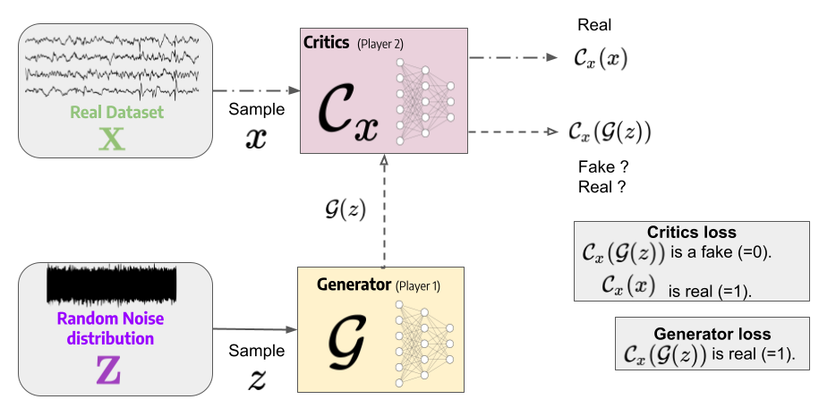
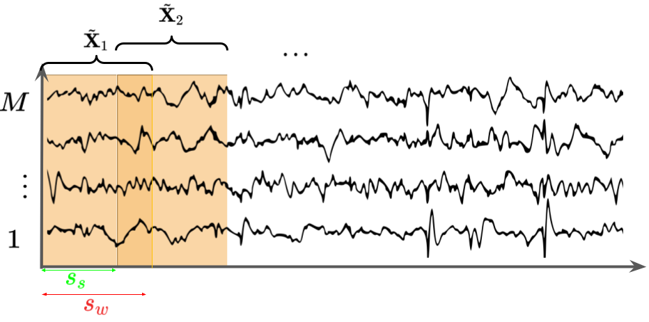
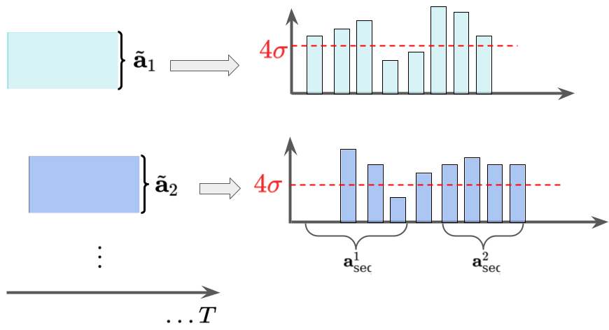

Ringberg, H. et al. (2007). Sensitivity of PCA for traffic anomaly detection, ACM SIGMETRICS.
An, J. et al. (2015). Variational autoencoder based anomaly detection using reconstruction probability, IE.
Malhotra, P. et al. (2016). LSTM-based encoder-decoder for multi-sensor anomaly detection, ICML.
Wolleb, J. et al. (2022). Diffusion models for medical anomaly detection, MICCAI.
Müller-Franzes, G. et al. (2022). Diffusion Probabilistic Models beat GANs on Medical Images, CVPR.
Zhou, B. et al. (2019). BeatGAN: Anomalous Rhythm Detection using Adversarially Generated Time Series, IJCAI.
Li, D. et al. (2019). MAD-GAN: Multivariate anomaly detection for time series data with GAN, ICANN.
Geiger, A. et al. (2020). Tadgan: Time series anomaly detection using generative adversarial networks, ICBD.
Outlines
I - Introduction
II - TAD-GAN
$\quad$ II.A - GAN and extensions
$\quad$II.B - TAD-GAN in a nutshell
III - Anomaly detection process for TAD-GAN
IV - Experiences
V - Conclusion
II.A - Generative adversarial networks and extensions
General Definition (1/2)

Generator: $\mathcal{G}(z)$ intended to come from $\mathbb{P}_X$ (trained to fool the critics $\mathcal{C}_x$)
Discriminator: tell if $\mathcal{G}(z)$ is real/fake ? (trained using $\bold{X}$ and answering "real")
A common loss (based on zero-sum game) is designed:
$$
\mathcal{L} = \mathbb{E}_{x \in \mathbb{P}_{\bold{X}}}[\log(\mathcal{C}_x(x))] + \mathbb{E}_{z \in \mathbb{P}_{\bold{Z}}}[\log\left(1-\mathcal{C}_x(\mathcal{G}(z))\right)]
$$
Goodfellow I.J et al. (2014). Generative Adversarial Networks, NEURIPS.
General Definition (2/2)
Summary of the training procedure
$\{z_k\}_{k=1}^{K}, \{x_k\}_{k=1}^{K}$: samples from $\mathbb{P}_{\bold{Z}}$ and $\mathbb{P}_{\bold{X}}$ respectively.
$\Theta_{\mathcal{C},x}$ and $\Theta_{\mathcal{G}}$ the parameters of $\mathcal{C}_x$ and $\mathcal{G}$ respectively.
Compute $P$ times (at each iteration, new $\{z_k\}_{k=1}^{K}, \{x_k\}_{k=1}^{K}$)
$\nabla_{\Theta_{\mathcal{C},x}}\frac{1}{K}\sum_{k} [\log(\mathcal{C}_x(x_k))
+ \log\left(1-\mathcal{C}_x(\mathcal{G}(z_k))\right)] \quad \texttt{(Critics training)}$
$\quad \quad \rightarrow$ backpropagation along $\Theta_{\mathcal{C},x}$
Compute (with new $\{z_k\}_{k=1}^{K}$):
$\nabla_{\Theta_{\mathcal{G}}}\frac{1}{K}\sum_{k} [
\log\left(1-\mathcal{C}_x(\mathcal{G}(z_k))\right)] \qquad\qquad\qquad~~ \texttt{(Generator training)}$
$\quad \quad \rightarrow$ backpropagation along $\Theta_{\mathcal{G}}$
Repeat i. and ii. many times (at least, to be close to Nash Equilibrium)
Pros & Cons
Can approach any implicit distribution if well tuned and trained
in other way, may generate well data close to $\bold{X}$
Hard to train in practice (instability, very poor convergence etc.)
Wasserstein Extension
Definition
A way to deal with "gradient explosion" using $\mathcal{W}$ the Wasserstein-1 distance
Under some conditions, if $\mathcal{G}$ is locally Lipschitz, then
$\mathcal{W}(\mathbb{P}_{\bold{X}}, \mathbb{P}_{\bold{Z}})$ is differentiable
The objective becomes (using Kantorovich-Rubinstein duality):
Replace the previous loss $\mathcal{L}$ with $\mathcal{L}_{\mathcal{W}}$
clip $\Theta_{\mathcal{C}_x}$ between small values
Arjovsky, M. et al. (2017). Wasserstein gan, ICML.
Multivariate anomaly detection: MAD-GAN (1/3)
Generalities
Take into account the intercorrelation between sensors for TAD + GAN
LSTM for both the critics $\mathcal{C}_x$ and the generator $\mathcal{D}$
Use "normal data" for training and compute a "residual reconstruction error"
Data Pre-processing
$M$, $T$ measurements and time step respectively
sub-sequences of $\bold{X} \in \mathbb{R}^{M \times T}$ with sliding window of length $s_w$ and step size $s_s$
$\quad \rightarrow$ results in $\bold{\tilde{X}}_{s,w} = \{\tilde{\bold{X}}_i\}_{i=1}^{I}$ where $I=s_s^{-1}(T-s_w), \tilde{\bold{X}}_i \in \mathbb{R}^{M \times s_w}$

Multivariate anomaly detection: MAD-GAN (2/3)
Training procedure $\rightarrow$ as a "usual" GAN on $\bold{\tilde{X}}^{\text{train}}_{s,w} \in \mathbb{R}^{M \times I_1 \times s_w}$
For the sake of clarity, $M=1$ and $s,w$ are omitted.
Test Procedure
two losses on $\bold{\tilde{X}}\in \mathbb{R}^{I_2 \times s_w}$
with $\tilde{x}^{\tau}_{i} \in \mathbb{R}, \forall (\tau,i) \in \llbracket 1, s_w \rrbracket \times \llbracket 1, I_2 \rrbracket$:
Critic loss : $\mathcal{L}_{\mathcal{C}_x}^{\tau}=\mathcal{C}_x(\tilde{\bold{x}}^{\tau}) \in \mathbb{R}^{I_2}$
Residual loss between $\bold{\tilde{X}}$ and $\mathcal{G}(Z^k)$:
$\quad \rightarrow$ sample $Z^1$ to get a random $\mathcal{G}(Z^1) \\$
$\quad \rightarrow$ iteratively sample update with the gradient obtained from $\epsilon\\$
Sliding windows are used with $s_w = T/3$ and $s_s = T/30$
for each sliding window static threshold defined as $4$ std. from the mean.
anomaly score is larger than the threshold $\implies$ anomaly
continuous points yields the anomalous sequences $\{\bold{a}_{\text{seq}}^k\}_{k=1}^{K}$

Anomaly pruning $[\texttt{Hun. 18]}$
Technique to mitigate with false positives
Consider the maximum values $\{\bold{a}_{\max}^k\}_{k=1}^{K}$ in descending order
Compute the decrease percent $p^{k} = (a^{k-1}_{\max} - a^{k}_{\max})/a^{k-1}_{\max}$
When the first $p^i < \text{threshold} = 0.1$ the sequence is normal
It remains $\{\bold{a}_{\text{seq}}^{j}, 1 \leq j < i\}$ as anomalies
Hundman K. et al. (2018). Detecting Spacecraft Anomalies Using LSTMs and Nonparametric Dynamic Thresholding, SIGKDD.
IV - Experiences
TAD-GAN Architecture and inputs
Inputs are times series of length $100$ and the latent space dimension is $20$
1 Layer of Bi-LSTM with $100$ hidden units for $\mathcal{E}$
2 layers of Bi-LSTM with $64$ hidden units for $\mathcal{G}$
1-D convolutional layer for both Critics
batch size of $64$
$2000$ iterations in total
Baselines
ARIMA Learn autocollerations in the times series for future value prediction.
Point-wise prediction error is used as an anomaly score.
HTM encodes the current input to a hidden state and predicts the next
hidden state. Prediction errors are computed as the differences
between the predicted state and the true state
LSTM Prediction based with a point-wise prediction errors used as anomaly detection
AutoEncoder an LSTM autoencoder with a point-wise reconstruction error used
MAD-GAN: already introduced. A multivariate time series reconstruction with GAN
Microsoft Azure Anomaly Detector: use a spectral residual CNN (SR-CNN)
Amazon DeepAR: use an autoregressive recurrent network.
Considered datasets
Data Preparation
the data is normalized
$s_w=100$ and $s_s=1$
Data presentation
spacecraft telemetry: signal provided by the NASA
Yahoo S5: $A1$ based on real production traffic, $A_2, \dots, A_4$ synthetic datasets.
Numenta Anomaly Benchmark (NAB): multiple times series data from various domains